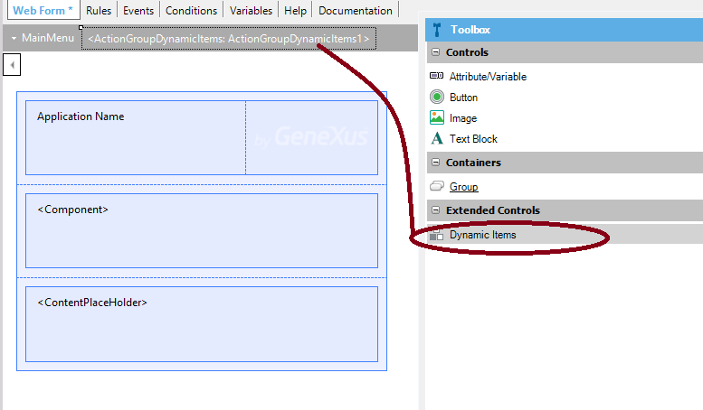
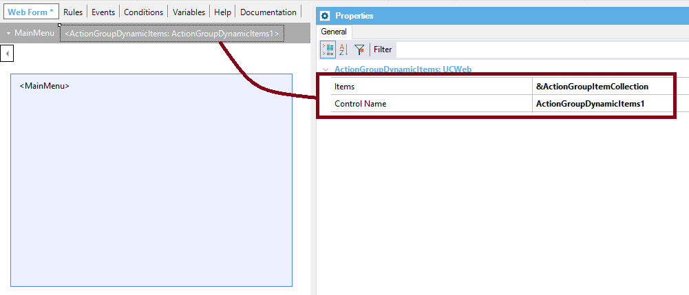
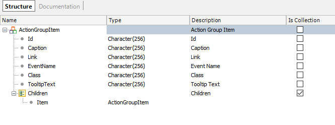
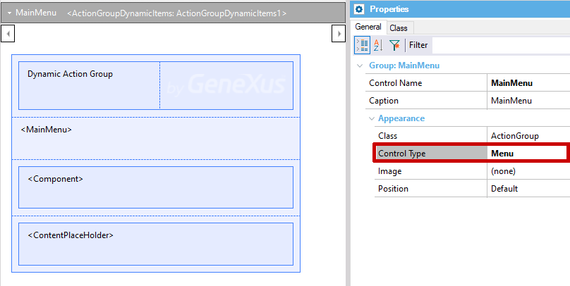
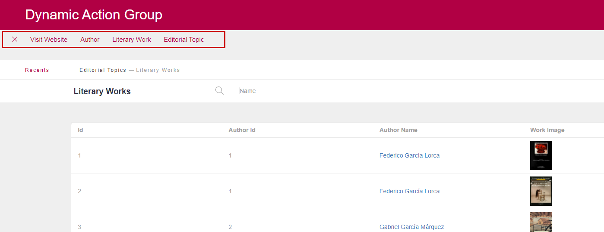
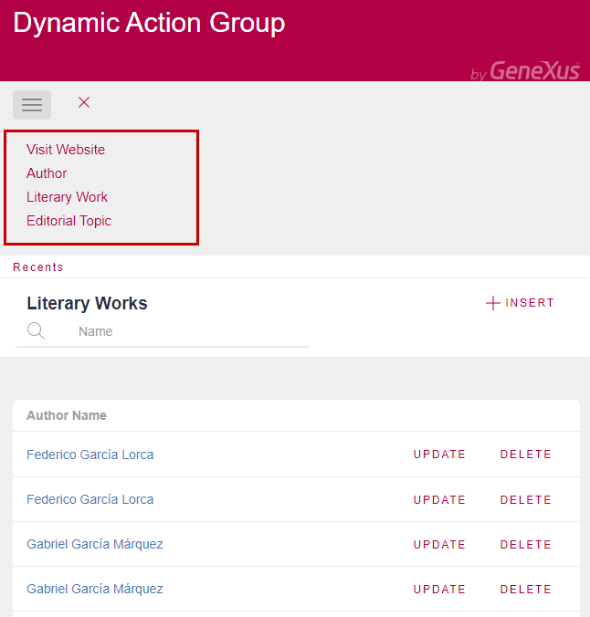

The way to create a dynamic menu in your web application is through the use of the Dynamic Items of the Action Group. An Action Group can be dynamic, which means that some or all of its items are loaded using an SDT structure.
See Action Group to know the ways to insert an action group into the form.
After creating the action group, dynamic items are added by dragging the "Dynamic Items" option of the GeneXus toolbox (grouped under Extended Controls) to the toolbar.

Note: Click on the gray area - where the action group is defined - to be able to see the Dynamic Items extended control.
The Action group dynamic items control has the Items property, where you can specify the Structured Data Type variable which will load the items of the menu (&ActionGroupItemCollection in the example).

The &ActionGroupItemCollection variable is a collection of ActionGroupItem SDT, which is automatically defined in the KB when you use an Action group dynamic items control.

In the following example, we have a What is a Master Page where we've defined an action group called "MainMenu". It includes an Action group dynamic items control, and its Control Type property is set to Menu (so it will behave like a Web Navigation Bar).

In the Events of the Master Page, we call a subroutine where we load the &ActionGroupItemCollection variable calling a Data Provider.
And we also add the events to bind the DataProvider "EventName" properties:
Event Start
Do 'Add Action Group Items'
Endevent
Sub 'Add Action Group Items'
&ActionGroupItemCollection = LoadActions()
EndSub
Event 'VisitWebsite'
link("https://www.youtube.com/")
EndEvent
Event 'AuthorActions'
Do Case
Case &ActionGroupItemPressed.Id = "AuthorInfo"
wwAuthor.Link()
Case &ActionGroupItemPressed.Id = "LiteraryWork"
wwLiteraryWork.Link()
EndCase
EndEvent
The Data Provider is as follows:
ActionGroupItem
{
Caption = "Visit Website"
EventName = "VisitWebsite"
Class = ThemeClass:MenuLiterature1
TooltipText = "Visit Website"
}
ActionGroupItem
{
Id = "AuthorInfo"
Caption = "Author"
EventName = "AuthorActions"
Class = ThemeClass:MenuLiterature1
TooltipText = "Author"
}
ActionGroupItem
{
Id = "LiteraryWork"
Caption = "Literary Work"
EventName = "AuthorActions"
Class = ThemeClass:MenuLiterature1
TooltipText = "Literary Work"
}
ActionGroupItem
{
Caption = "Editorial Topic"
Link = wweditorialTopic.Link()
Class = ThemeClass:MenuLiterature1
TooltipText = "Editorial Topic"
}
Note that the "EventName" properties must be the exact same as defined on the Events of the Master Page or WebPanel.
At runtime:


Download sample from here.
Note that:
Using the Toolbar control type, you can nest as many items as you want, using the children node of the SDT. In the case of the Menu control type, only two levels of nesting is supported.
The Link property must be empty when the toolbar item has children items.
You can assign a Theme Class to each link item. Remember that the class associated with the action group control has precedence over the class assigned to the link item.
The only items supported are text items. Buttons, images and edit boxes are not supported.
| Backlinks | |
| Action Group Control for the Web | Menu for Web Applications |